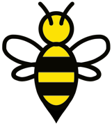

Bees KeysRhythm Phrase Builders
Lay one card from each pile in order, Creature, Action, Path, Place. Read the sentence, then chant and clap the rhythm underneath.


Creature · Action · Path · Place
Ideas for use
- 1Mix and match cards to build rhythmic phrases!
- 2Clap along to the rhythm as you chant the words.
- 3Choose a 5-finger scale, and make up a melody to go with your new Rhythm Phrase!
- 4For more advanced students, try to improvise a melody over a I–IV–V–I chord progression, with one chord per card.
More ideas
- 5Build a silly sentence: Mix the cards randomly, then chant and clap whatever funny phrase you create.
- 6Echo game: Teacher claps or plays a phrase, and the student finds the cards that match what they heard.
- 7Rhythm dictation: Build a phrase, hide the cards, then have the student notate the rhythm from memory.
- 8Make it move: March, tap, stomp, bounce, or jump the rhythm while chanting the words.
- 9One-note improv: Play the whole rhythm on one piano key first, then gradually add more notes.
- 10Question and answer: Build two phrases. Play the first as a musical question and the second as the answer.
- 11Rhythm matching: Find two different cards that use the same rhythm.
- 12Make a longer piece: Build 2, 4, or 8 phrases, then arrange them into a larger composition.